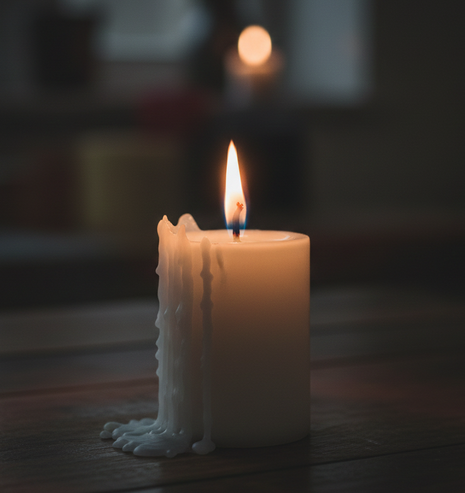

霊視した瞬間、光が見えた。
お二人の魂が「まだ終わってない」って。
そして、彼の心を動かす
「本来のあなたの魅力」が解放されれば、
温かい未来はやってきます。
あきよ様
大切なお気持ちを、打ち明けてくださって
ほんまにありがとうございます。
2年3ヶ月付き合ってるのに、
2度もLINEブロックされてる。
名前で呼んでくれへんくなって、
好きって言葉も聞けへんくなった。
また何かあったらブロックされるんやないかって、
毎日ビクビクしてる。
聞きたいことも我慢して、
彼の顔色を伺いながら過ごしてる。
でも本当は、ずっとそばにいて
支えてあげたいって思ってる。

ただ、自分の気持ちを抑えすぎてしまう。
「嫌われたくない」「捨てられたくない」って、
言いたいことも我慢してしまう。
それは、弱さではありません。
相手を想うあまりの、あなたの優しさです。
今この状況にいるのは、あなたのせいやない。
"ある理由"でオーラが弱くなってるだけ。
でも安心してください。
ここさえ整えば、
本来のあなたの魅力が覚醒して
望む未来が近づいてきます。
彼の魂には、
ものすごいプレッシャーがかかってる。
有限会社から株式会社にして、
背負うものが一気に重くなった。
出張も多くて、現場も事務も、
全部自分でやらなあかん。
心に余裕がなくて、
あなたに優しくする力が残ってへん。
彼があなたをブロックする理由。
彼が「結婚」をどう考えてるのか。
その答えが視えた。
これは無料鑑定の範囲では
お伝えしきれへん内容やから、
本鑑定で丁寧にお伝えしたい。
ただ一つだけ、ここで言えることがある。
彼がLINEブロックするのは、
あなたとの関係を終わらせたいからやない。
ただ、心に余裕がなくて、
対応できひんから逃げてるだけ。
そこだけは、はっきり視えてます。
ここまでの鑑定で、今視えた事をお伝えしました。
でも、一番大事なのはここから。
「じゃあ、具体的にどうすればいいのか」
本鑑定では、あなたが実際に動ける
"具体的な道筋"を視ていきます。
このまま分からないまま過ごすか、
具体的な道筋を知った上で動くか。
どちらを選ぶかは、あなた次第です。
今、あなたの運命は少しだけ前に動いています。
この鑑定書を読んで、
「どうしよう」と考え始めたから。
でも、この流れはずっと続きません。
何もせず元の生活に戻れば
運命は動きを止めてしまいます。
今から24時間。
ここで決断すれば、
運命は一番スムーズに動きます。
お申し込み後、購入時のお名前をお知らせください。
2日以内に、あなただけの鑑定書をお届けします。
私には視えてます。
あなたの濁りが取れて、
本来の輝きを取り戻したとき。
彼が、あなたの目を見つめながら
「ちゃんと話したい」
そう言っている場面が。
その未来への道、私が照らしますね。